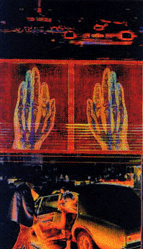

Metamorphoses:
Digital Photography in the Electronic Age and Pixel Perfect: Digital
Photography in the Bay Area
Metamorphoses:
Digital Photography in the Electronic Age and Pixel Perfect: Digital
Photography in the Bay Area
by Jan Ekenberg
Since August 31, two shows Metamorphoses: Digital Photography
in the Electronic Age and Pixel Perfect: Digital Photography in the
Bay Area, have been hosted by the San Jose Museum of Modern Art. Over forty
artists and over a hundred artworks are represented in these two shows,
the separation of the two show defined by the location of the artists. The
two shows are homogenous and held together, formally, if not conceptually,
in most ways by shared world-view. All the artworks are hung on the museum
walls, mostly moderately sized and neatly framed and glassed. If you've
questioned whether or not something that was made on (or by as the
those skeptical of technological art-making still say) a computer can't
be art, perhaps here's proof: Metamorphoses and Pixel Perfect
look and smell like art. If that was part of the intention, and I think
it might have been, the shows are successful. But for the ones who reject
such questions, whether art can or cannot be produced with certain kinds
of techniques, the shows are postulated and stiff. Frequent is the use of
glossy black frames of ebony (imitation), thick and broad mats, heavy Arches
and Amati paper with water stamps, slick signatures and edition numbers.
You often have to remind yourself that it's not a show of vintage photography
or prints. All these signs are signifying art... art as commodity.
This framing frenzy is at its best, slick and elegant, at its worst, constipated.
Sometimes, as in the collaborative works by Ed Hill and Suzanne Bloom under
the name MANUAL, the framing reaches absurd proportions. Even though
the frames are supposed to be a conceptual part of their project about wood
and Russian Constructivism (which they write, should be "understood
in its vital sociopolitical form; i.e., free of modernism's suffocating
embrace"(!?) Hey, is there another Russian Constructivism that I've
missed?) it overshadows the images so only the frames are seen.
Digital Photography is a part of both names of the shows, but it's clear
that the emphasis is on Photography and not on Digital. Often, as in the
case of Deanne Sokolin and Stephen Johnson, no other manipulation than cropping
has been made after the digital photograph was taken. The fact that the
technique is digital seems like a technicality. If the digital never shows
up as trace why is it important to the viewer? Almost all professional
music is nowadays recorded digitally and video is going in that direction
too. Should they be treated different than their analogue correspondents?
But the shows contain a lot of computer manipulated photography. Many are
the copies of the software product Photoshop that have been sold
to the participating artists by the main sponsor of the two shows: Adobe.
Many of the participants use this product, and products similar to that
one, to do collage, change color, layer images and/or text. Kathleen H Ruiz,
Eva Sutton and Shelley J. Smith practice this "traditional" use
of computer and software with often dreamlike, romantic results with roots
in surrealism. In some instances, the works are of old "family photographs"
scanned and (re-)used. Both Susan Schwartzenberg and Martina Lopez do this
but the latter is more successful in that she is aware of the role that
scale plays, especially when situated in a large room like this.
"I believe that through alteration [...] these images can actually
convey truth and emotion in a more direct fashion [than the originals]."
These are the words by Anil Melnick who appropriates classic photographers
works and manipulates them. The concept of truth in photography has been
so fundamentally, and successfully, invalidated by semioticians and philosophers
it feels awkward to see it mentioned in a large show like this one in relation
to photography-- be it computer manipulated or not. Kathleen H. Ruiz, Eva
Sutton, Shelley J. Smith and Anil Melnick are all too sentimental and "touchy,
feely" for my taste.
 Some of the artists in these two shows take the concept, or the specificities
of working with computers and bring it to a level I would have liked to
have seen more. Nancy Burson investigates the software along with the art
production and creates fictitious portraits of children with potential birth
disease. This is a zone between virtual and factual where the fears of our
minds are born. Single, Twins and Triplets are the titles
of Keith Cottingham's three contributions, all from the series Fictitious
Portraits. These images looks at a first glance to be studio portraits
of what the titles indicate. But something is not just right. These eerie
dandy-like Boys from Brazil have never walked or talked. They are
fictitious. The notion creeps up to you from behind -- that everything can
be so right... and still so wrong. The explanation of the creation of these
clones confirms that feeling. The artist's intention and technique is not
important as a help or a clue, but inherent in the piece of art.
Some of the artists in these two shows take the concept, or the specificities
of working with computers and bring it to a level I would have liked to
have seen more. Nancy Burson investigates the software along with the art
production and creates fictitious portraits of children with potential birth
disease. This is a zone between virtual and factual where the fears of our
minds are born. Single, Twins and Triplets are the titles
of Keith Cottingham's three contributions, all from the series Fictitious
Portraits. These images looks at a first glance to be studio portraits
of what the titles indicate. But something is not just right. These eerie
dandy-like Boys from Brazil have never walked or talked. They are
fictitious. The notion creeps up to you from behind -- that everything can
be so right... and still so wrong. The explanation of the creation of these
clones confirms that feeling. The artist's intention and technique is not
important as a help or a clue, but inherent in the piece of art.
Osamu James Nakagawa, Esther Parada, Roshini Kempadoo, Paul Klein and Robin
Lasser represent the obvious political point of view. Roshini Kempadoo's monetary bills
is an interesting idea but the seventies-type message is just too much --
"we all agree." Osamu James Nakagawa also uses the same "fight
the power" strategy. The images are in some way effective but do not
really raise any questions that we don't already know. I also wonder why
he uses a computer. What he is doing could be achieved in a dark room with
a pair of scissors. (Donate the computer equipment to ANC!) Robin Lasser
in Pixel Perfect has a humorous and more micropolitical take on issues.
The images are successfully slightly clumsy both in terms of composition
and technique, and let us see our public signs in a new light.

The only artist represented in both shows is Diane Fenster who has become
quite known for her text/image collages. Her images are so overloaded with
indexical and iconographic signs I feel pushed out when I try to access
them.
The curator of the "companion exhibition" to Metamorphosis,
Pixel Perfect is the young SJMA Assistant Curator Mark Petr who has
done a good job under time pressure even though I would have liked to see
a show that could tap into a meatier discourse of contemporary issues. Rebeca
Bollinger's gloomy, suburban, networked images with an aestethic refinement
and conceptual point would have been in such a show. Keay Edwards III's formulaic approach, where "artistic" colors and Greek mythology are put into a triptych, would not.
Metamorphoses: Digital Photography in the Electronic Age and Pixel
Perfect: Digital Photography in the Bay Area work well together.
Incorporating a little of everything seems to make them approachable for
everyone -- maybe more for the eyes than for the brain. If you feel
contemporary art is often difficult and arcane, you might want to take a look
at these exhibitions.